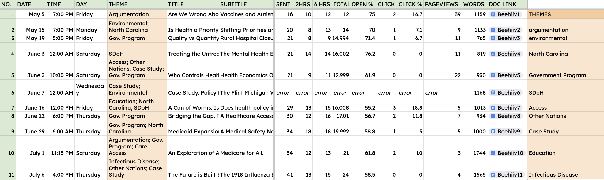

Health in Perspective is a health policy journalism portfolio (hosted on the Beehiiv platform) that explores the intersection between public health and government policy. By detailing how health policy affects stakeholders and communities, I hope to investigate different means of improving access to and quality of care.
Health in Perspective articles are posted weekly and cover a wide variety of health policy related issues and case studies. Below are a few topics covered by my previous articles:
Expanding the Platform:
Over the past several weeks, I have focused more on increasing viewership and keeping my journal content interesting for my changing audience-base. By aggregating viewership data using variables including pageviews, theme, date & time, and open percent, I am working to identify what themes are most interesting to my audience-base and what articles I should focus on building moving forward. By honing in on 10 specific themes (argumentation, environment, North Carolina, Government Programs, Social Determinants of Health, Healthcare Access, International Policy, Case Studies, Education, and Infectious Disease) and by sorting through the times at which I publish my articles, I have developed strategies to build the Health in Perspective community and continually engage readers with new interesting articles.
If you are interested in learning more about health policy and join ongoing discussions related to healthcare access and quality, I invite you to join:
For further information about Health in Perspective, feel free to reach out: